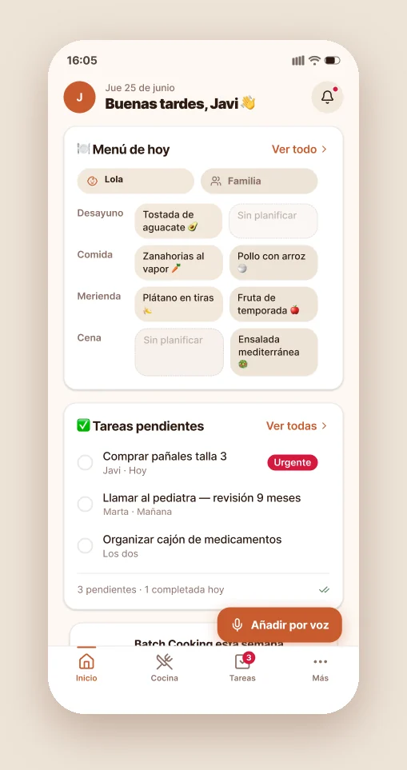
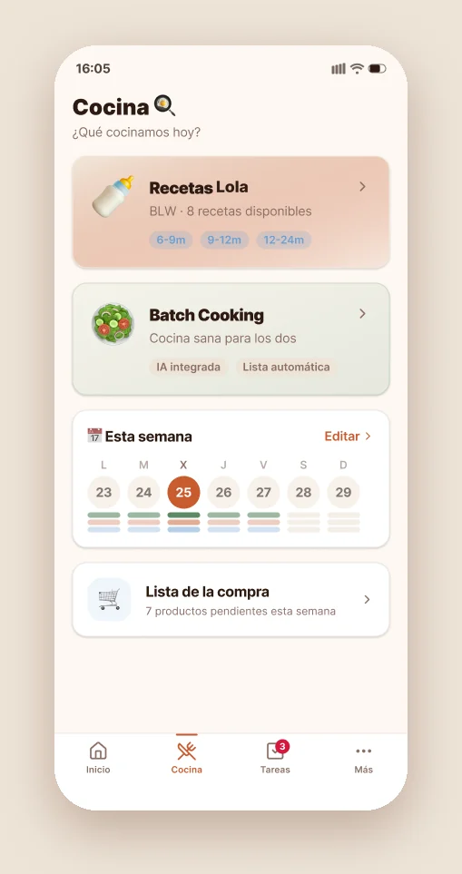
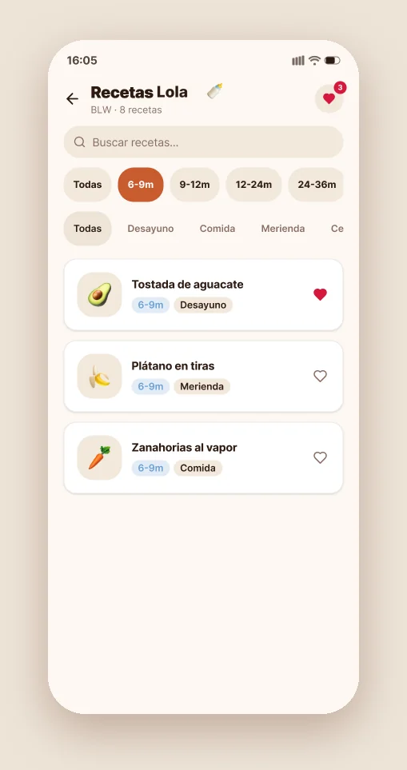
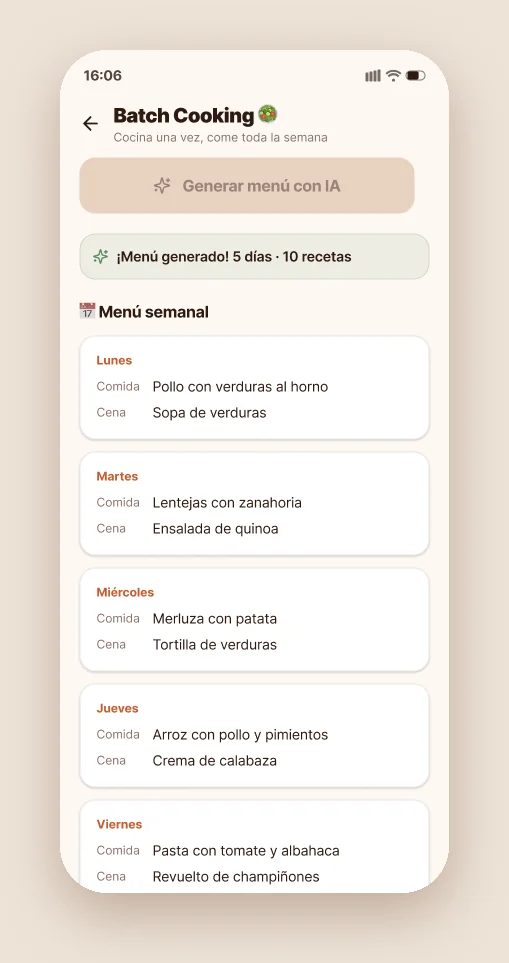
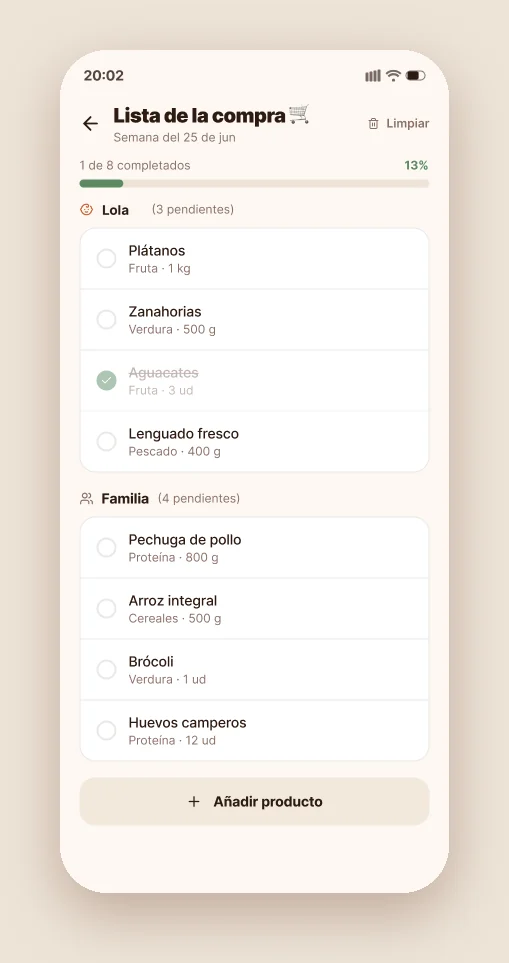
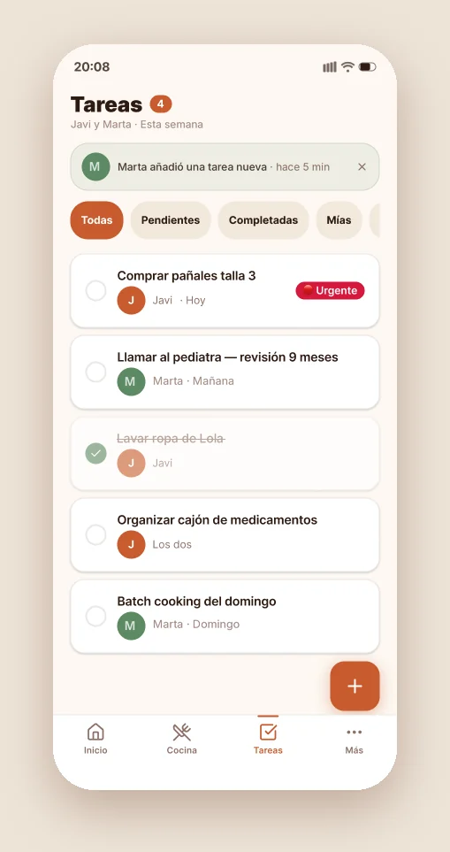
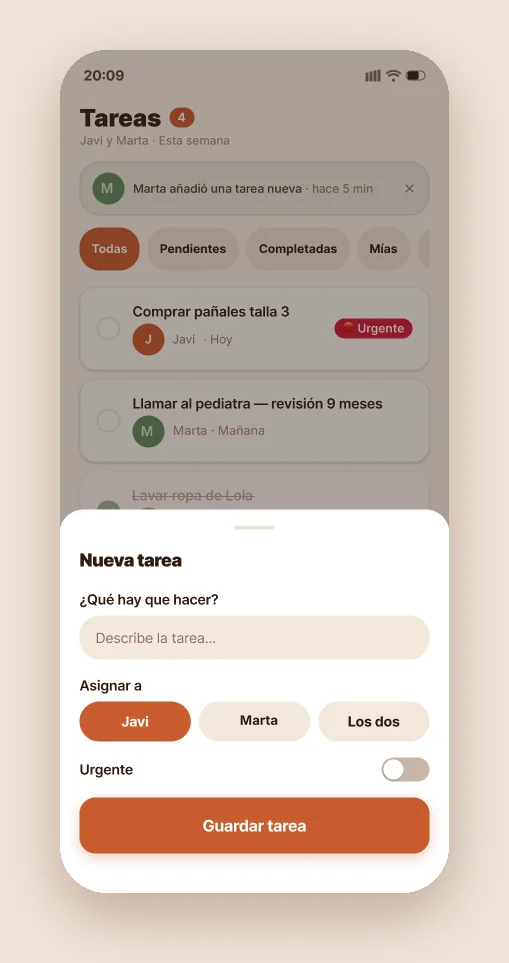
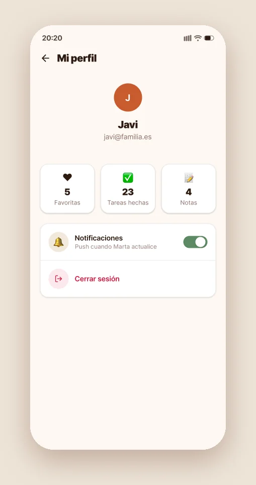

FamilyHub: Designing and Building a Self-Hosted Family Platform
From a single recipe tool to a PWA and native iOS/Android apps — designed, built and hosted end to end

FamilyHub is a family management platform I designed and built end to end: a progressive web app plus native iOS and Android apps, all running on a Synology NAS at home.
It started as a small recipe tool and grew, module by module, into the place where our family's day-to-day information lives.
Family logistics tend to be scattered: recipes in one app, doctors' phone numbers in another, shared expenses in a spreadsheet, reminders in a group chat. FamilyHub began as a baby-led weaning (BLW) recipe tool and kept expanding as the same fragmentation showed up in other parts of family life.
- Family information spread across chats, notes and disconnected apps.
- No single place for shared tasks, expenses and key contacts such as medical providers.
- Off-the-shelf tools meant handing personal family data to third-party services.
Design and build one coherent platform for family life — consistent across web, iOS and Android — with all data self-hosted on our own hardware.
- Product definition and scoping each new module.
- Design system and UI design across three platforms.
- Full-stack development: PWA, backend, native iOS and Android apps.
- Self-hosted infrastructure and deployment on a home NAS.
Origin. The first version solved one concrete need: planning baby-led weaning recipes. Using it daily made it obvious which other family workflows needed the same treatment.
Scope evolution. Rather than planning a big platform upfront, FamilyHub grew one module at a time — contacts and medical providers, tasks, shared expenses, and push notifications — each added when a real need appeared.
Design system. A warm terracotta, cream and sage palette with Nunito as the typeface, designed to feel calm and domestic rather than corporate. The system was sourced from a Figma Make file and brought into code through Figma MCP, keeping design and implementation in sync.
Modules. A kitchen hub with baby-led weaning recipes filtered by age, AI-generated batch-cooking menus, a weekly planner and a shopping list; shared tasks with owners, urgency and voice input; plus contacts and medical providers, shared expenses and push notifications. Every module is built on the same components and patterns, so the platform feels like one product, not a collection of tools.
Native apps. Beyond the PWA, I built native apps for iOS in SwiftUI and for Android in Kotlin with Jetpack Compose, translating the same design system to each platform's conventions.
Infrastructure. The backend is PocketBase running in Docker on a Synology DS925+ NAS. Push notifications are delivered through Firebase Cloud Messaging from a separate Docker container.
Where AI did the work, and where I did. I used Figma Make to get the first visual direction out quickly, and Figma MCP to pull the design system straight into code instead of re-typing values by hand. That is genuinely faster — but it is also where the thinking stops and the judgement has to start. The tools produced: first-pass layouts, a palette to react to, and the token-to-code plumbing. I decided: that it should feel domestic rather than corporate, which modules existed at all and in what order, what belonged on the home screen versus a tab, and the whole information architecture. How I checked it: by using it daily with my family. Several AI-suggested layouts looked fine in Figma and were wrong in the kitchen with one hand full — those got rebuilt. The honest summary is that AI compressed the production time and changed none of the product decisions.








A single design system shared across the PWA, SwiftUI and Jetpack Compose apps.
Family data stays on our own hardware, with no dependency on third-party SaaS for storage.
From Figma to Docker: product, design, frontend, native apps, backend and infrastructure by one person.
- Growing a product one real need at a time keeps scope honest.
- A shared design system is what makes a multi-platform product feel like one product.
- Building across the full stack sharpens design decisions — you feel every constraint firsthand.